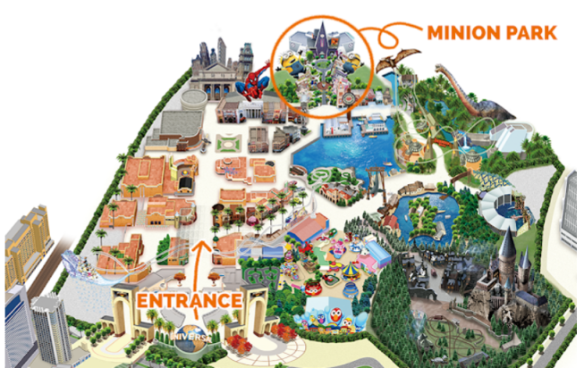
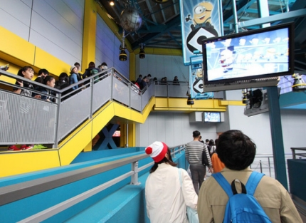
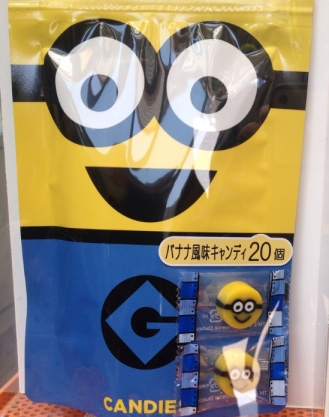
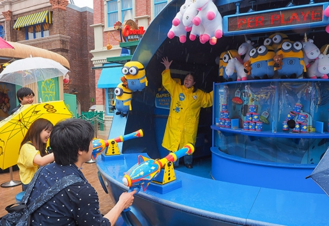
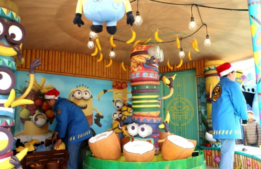
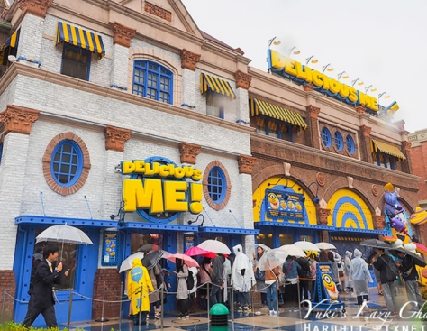

有熊的小小兵在大門一進來的地方
先結帳跟收銀人員說要幾個爆米花桶
這時可以要求把爆米花分開放 セパレート
(最下面的バケツ（中身無し） 指的也是桶子不要有內容)
收銀人員會給收據跟領取單
再拿領取單到旁邊的爆米花攤子給店員

小小兵樂園

瘋狂乘車遊排隊時會分三路, 建議排最低層

小小兵KING BOB 香蕉爆米花桶 3200 推
(爆米花造型桶限量, 當日售完為止)


no popcorn 爆米花可以不要裝在裡面
表演場地旁的攤子

小小兵包子 500 (豬肉口味) 推
糰子三兄弟 400 外皮像麻糬 內餡像冰淇淋
小小兵水壺 1980

小小兵商店

小小兵餅乾(雞蛋牛奶) 900

小小兵糖果 (香蕉口味) 900 推

小小兵泡麵 1500/4入
泡麵體積很大
建議要離開園區時再一次購入
離大門口附近的伴手禮商店裡頭有
拍照點 1800
提供相片服務, 也會幫忙用相機先拍一張
射擊小遊戲(小小兵狙擊手) 1200/4球
擊倒全部瓶子可獲得大娃娃

投擲小遊戲(香蕉CABANA) 1200/5根
敲擊底部讓香蕉飛起來掉入中間會轉動的椰子可得玩偶


小小兵餐廳 DELICIOUS ME [官網]

小小兵餅乾三明治 ミニオン・クッキーサンド
依序為
烤棉花糖芒果慕斯
水果奶油
提拉米蘇
香蕉冰淇淋

國王BOB檸檬汽水 キングボブスプラッシュ 550

蜘蛛人原子筆 800